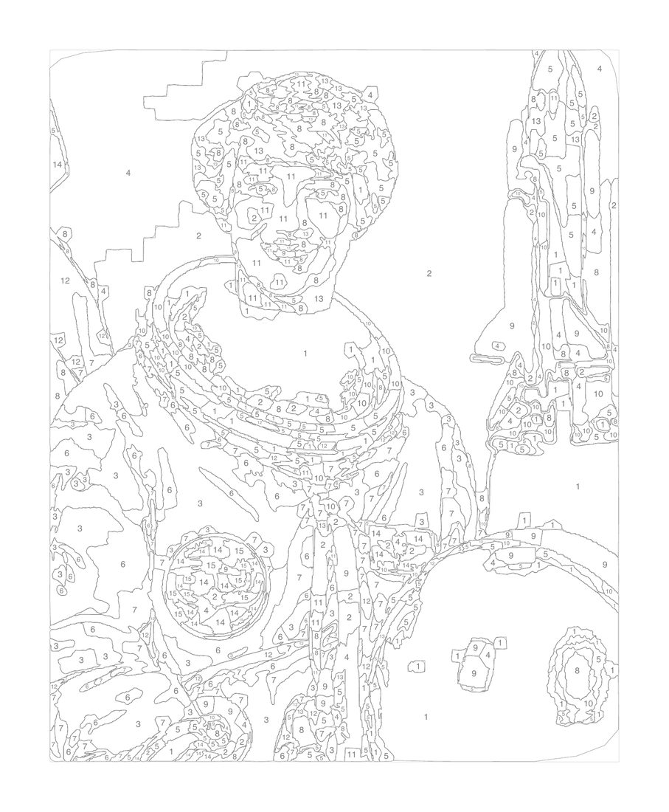
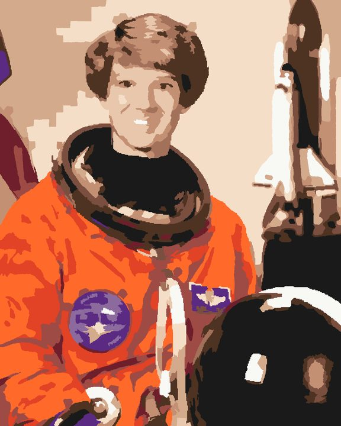

work / photo-to-paint
photo-to-paint
photo-to-paint turns a photograph into a kit you can print and paint: a numbered canvas at true physical size, a legend matched to real acrylic tubes, and a preview of the finished painting.
- Kind
- Art and tools. Open source.
- Stack
- Python 3.12, a command line tool run with uv. No PyTorch and no model downloads.
- Status
- Runs today. Checked on the demo photos on 17 November 2026.
Why it exists
A paint-by-numbers picture is easy to make on a screen. The trouble starts when it is printed at 40 by 50 cm and someone picks up a brush. Some regions turn out to be slivers too thin to fill. Some colors match no tube you can buy.
So the constraint here is written in millimeters and not in pixels. Every region on the canvas has to be large enough and thick enough to paint, and every color has to be a paint that exists.

2. the canvas to print
3. the painted previewHow it works
The photo is softened into a painterly version, cut into small patches that follow edges, and the patches are merged into regions. Each region gets a color, the color is snapped to the nearest real paint, and the outlines and numbers are written as vectors. Three decisions carry most of the quality.
- Merge on color and on edges. An eyelid crease or a lip line has almost no color contrast. A merge that looks only at color dissolves a face into one beige area, so merging across a strong edge is penalized.
- Segment before choosing colors. Clustering pixels first leaves speckle along every boundary. Building regions first means there is no speckle to clean up.
- Enforce thickness, not only area. A strip two pixels wide can pass a minimum-area test and still be impossible to paint. Anything thinner than 1.5 mm dissolves into its neighbor.
At default settings a 40 by 50 cm canvas comes out with roughly 400 to 500 regions in about ten seconds, which the README compares to a commercial kit.
Status and known gaps
It runs today and writes five files: the canvas as PDF and SVG, the legend, the preview and a report. The gaps are in the paint, not the geometry.
- You get fewer colors than you ask for. When several requested colors land on the same tube they merge into one number, and the tool says so.
- The bundled palettes are approximations. Neither paint maker publishes color data. A calibration command measures your own tubes from a photographed swatch grid.
- Portraits need more skin tones. The default set has one mid-tone flesh color, so faces need the six-tone skin supplement.
- One dependency has a stricter license. Pigment mixing uses Mixbox, which is non-commercial.
The principles behind it
Measure in the units of the finished object. A canvas is judged by a brush, so the limits are in millimeters. Say what the palette can express, even when it is less than was asked for. And check the photo before printing: an assess command measures resolution, face size and lighting, and refuses a photo that cannot make a good kit.